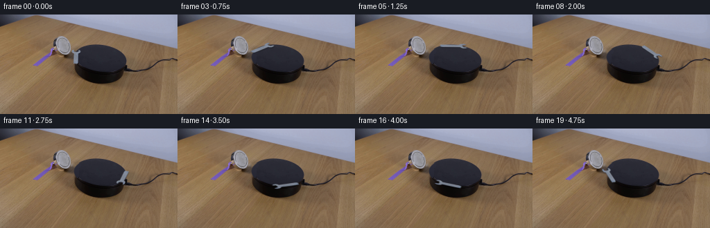
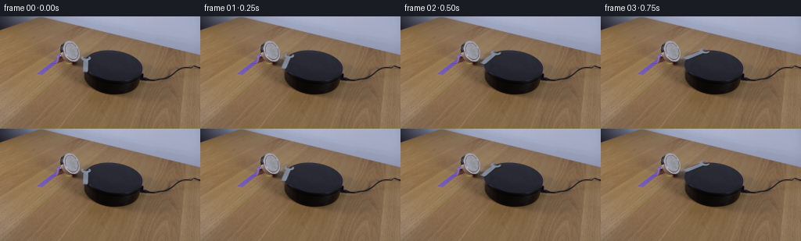
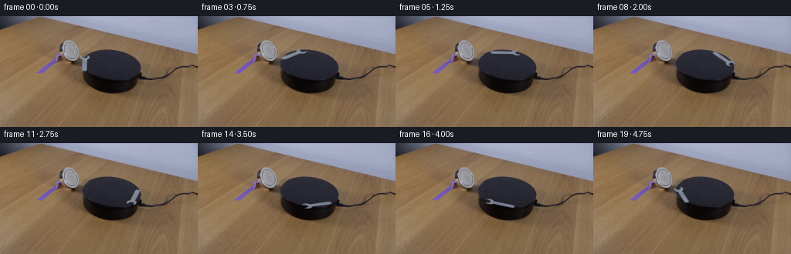
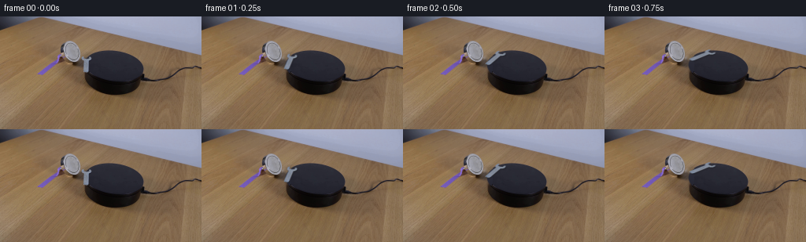
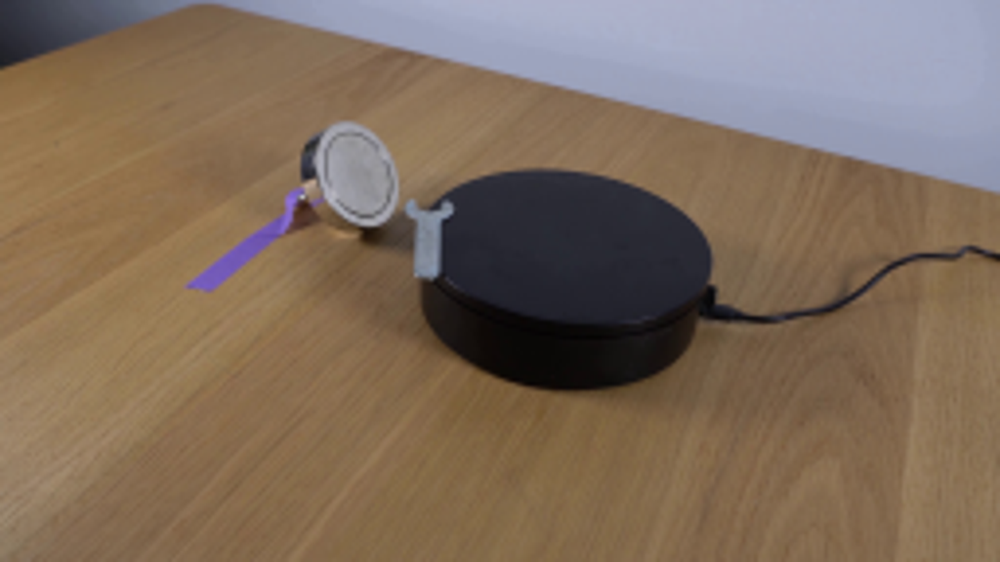
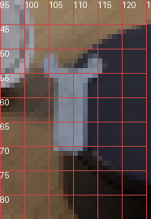
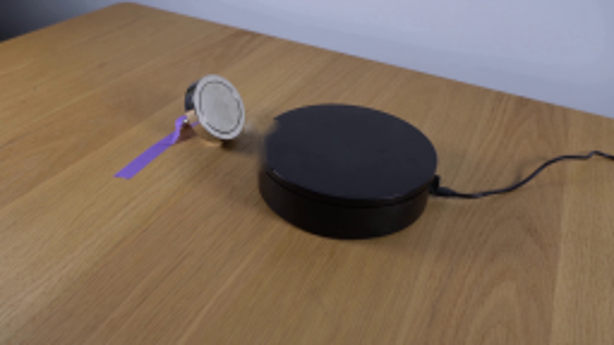
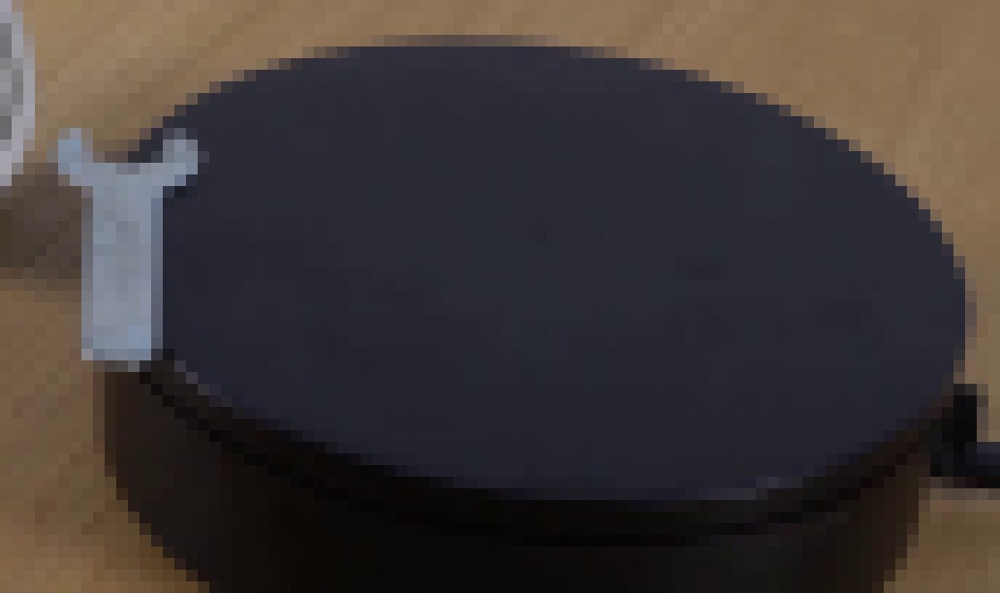
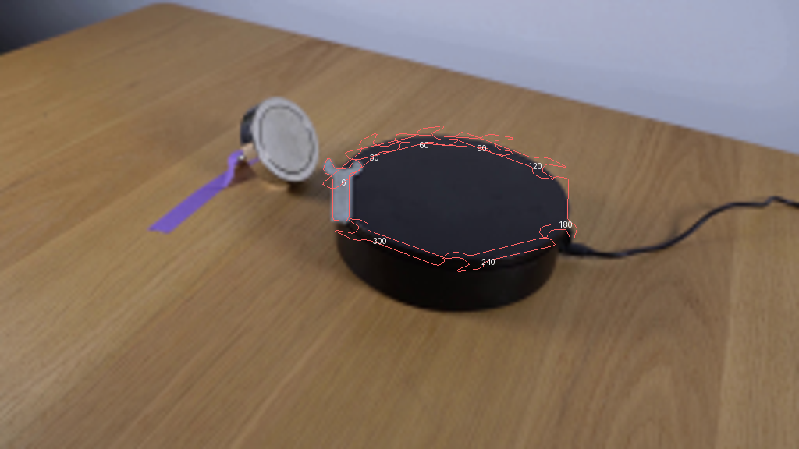

CODING AGENTS AS PIXEL WORLD MODELS
traex/GPT-6.1-Sol · 0102
点击播放 · 原生 RGB 像素
逐轮保存的候选
回放视频、检查图与代码变化。
每份候选均可单独播放。实际图片检查记录在下方工具轨迹中。
候选 01播放与检查图
点击播放 · 原生 RGB 像素


展开代码变化
--- 上一保存版本
+++ 本次保存版本
@@ -0,0 +1,95 @@
+from pathlib import Path
+import math
+import cv2
+import numpy as np
+from PIL import Image, ImageDraw
+from artifact_io import save
+
+ROOT = Path(__file__).resolve().parent
+S = 4
+
+def build():
+ original = np.asarray(Image.open(ROOT / 'first_frame.png').convert('RGB'))
+ H, W = original.shape[:2]
+ vertices = np.array([
+ (104.8,50.8),(105.7,50.9),(106.5,52.5),(107.2,53.8),
+ (108.3,54.0),(110.5,54.0),(112.1,53.6),(113.4,51.5),
+ (114.4,51.4),(115.0,52.2),(115.8,53.0),(115.4,54.3),
+ (114.2,55.0),(112.3,55.5),(111.8,56.0),(111.8,69.5),
+ (111.2,70.6),(110.0,70.9),(107.0,70.5),(106.5,69.8),
+ (106.7,57.3),(105.8,56.1),(104.4,55.5),(103.7,54.2),(104.2,52.5)
+ ])
+ poly = Image.new('L', (W*S,H*S))
+ ImageDraw.Draw(poly).polygon([tuple(v*S) for v in vertices], fill=255)
+ polylo = np.array(poly.resize((W,H),Image.Resampling.LANCZOS))
+ removal = cv2.dilate((polylo > 15).astype(np.uint8),np.ones((3,3),np.uint8))
+ background = cv2.inpaint(original, removal, 4, cv2.INPAINT_TELEA).astype(np.float32)
+ y,x = np.mgrid[:H,:W]
+ center = np.array([144.305, 63.756])
+ phi = math.radians(4.941)
+ q = np.array([[math.cos(phi),-math.sin(phi)],[math.sin(phi),math.cos(phi)]])
+ basis = q @ np.diag([1.,19.961/38.178])
+ u = (x-center[0])*math.cos(phi)+(y-center[1])*math.sin(phi)
+ v = -(x-center[0])*math.sin(phi)+(y-center[1])*math.cos(phi)
+ radius = np.sqrt((u/38.178)**2+(v/19.961)**2)
+ edge = np.clip((1-radius)*30+.5,0,1)
+ top_color = np.stack([44-.38*(y-54),44-.34*(y-54),56-.36*(y-54)],axis=-1)
+ # Repair the hidden bit of the very smooth turntable top with its
+ # fitted elliptical silhouette, keeping all visible surroundings untouched.
+ region = (x>102)&(x<117)&(y>48)&(y<76)&(removal>0)
+ patch = background*(1-edge[...,None])+top_color*edge[...,None]
+ background = np.where(region[...,None], patch, background)
+
+ # Recover the tiny metallic tool and its sub-pixel edge coverage from the
+ # photograph rather than replacing it with a symbolic drawing.
+ metal_reference = np.zeros_like(background)+np.array([132.,139.,153.])
+ delta = original.astype(np.float32)-background
+ contrast = metal_reference-background
+ alpha = np.clip(np.sum(delta*contrast,axis=-1)/(np.sum(contrast*contrast,axis=-1)+1e-5),0,1)
+ support = cv2.dilate((polylo>15).astype(np.uint8), np.ones((3,3),np.uint8))
+ alpha *= support
+ # Suppress non-tool pixels adjacent to the silhouette.
+ alpha *= cv2.GaussianBlur((polylo/255.).astype(np.float32),(3,3),.38)**.28
+ texture = background + delta/np.maximum(alpha[...,None],.10)
+ texture = np.clip(texture,80,182)
+ texture[alpha<.1] = metal_reference[alpha<.1]
+ # premultiplication allows clean affine resampling with no brown or black halos
+ ah = cv2.resize(alpha,(W*S,H*S),interpolation=cv2.INTER_CUBIC).clip(0,1)
+ texh = cv2.resize(texture,(W*S,H*S),interpolation=cv2.INTER_CUBIC)
+ premul = texh*ah[...,None]
+ bgh = cv2.resize(background,(W*S,H*S),interpolation=cv2.INTER_CUBIC)
+ out=[original.copy()]
+ for n in range(1,20):
+ t=n/4.
+ # Smooth real-time clockwise revolution, starting from the supplied pose.
+ angle=math.radians(73.)*(t-.10*(1-math.exp(-t/.10)))
+ rot=np.array([[math.cos(angle),-math.sin(angle)],[math.sin(angle),math.cos(angle)]])
+ transform=basis@rot@np.linalg.inv(basis)
+ offset=center-transform@center
+ matrix=np.column_stack((transform,offset*S)).astype(np.float32)
+ a=cv2.warpAffine(ah,matrix,(W*S,H*S),flags=cv2.INTER_CUBIC).clip(0,1)
+ color=cv2.warpAffine(premul,matrix,(W*S,H*S),flags=cv2.INTER_CUBIC)
+ # Extremely subtle variation of steel reflection under the fixed light.
+ brightness=1+.024*math.sin(angle)-.018*(1-math.cos(2*angle))
+ color*=brightness
+ image=bgh.copy()
+ shadowmat=matrix.copy();shadowmat[:,2]+=np.array([.65,1.15])*S
+ shadow=cv2.warpAffine(ah,shadowmat,(W*S,H*S),flags=cv2.INTER_CUBIC).clip(0,1)
+ shadow=cv2.GaussianBlur(shadow,(0,0),.65*S)*.29
+ image*=1-shadow[...,None]
+ # A fine darker edge conveys the thickness of the small flat steel wrench.
+ edgemat=matrix.copy();edgemat[1,2]+=.46*S
+ edgea=cv2.warpAffine(ah,edgemat,(W*S,H*S),flags=cv2.INTER_CUBIC).clip(0,1)*.68
+ edgecolor=np.array([78.,87.,102.])*brightness
+ image=image*(1-edgea[...,None])+edgecolor*edgea[...,None]
+ image=image*(1-a[...,None])+color
+ frame=cv2.resize(image,(W,H),interpolation=cv2.INTER_AREA).clip(0,255).astype(np.uint8)
+ # All pixels outside moving object footprints and original repair stay exact.
+ affected=cv2.resize((a+shadow+edgea),(W,H),interpolation=cv2.INTER_AREA)>0.001
+ affected |= removal.astype(bool)
+ frame[~affected]=original[~affected]
+ out.append(frame)
+ return np.stack(out)
+
+if __name__=='__main__':
+ save(build(),ROOT)
候选 02播放与检查图
点击播放 · 原生 RGB 像素


展开代码变化
--- 上一保存版本
+++ 本次保存版本
@@ -66,6 +66,9 @@
rot=np.array([[math.cos(angle),-math.sin(angle)],[math.sin(angle),math.cos(angle)]])
transform=basis@rot@np.linalg.inv(basis)
offset=center-transform@center
+ # The tool settles a few millimetres inboard of the lip, rather than
+ # floating beyond the far silhouette during its clockwise travel.
+ offset += transform @ (center-np.array([109.4,61.6])) * (.12*(1-math.exp(-t/.65)))
matrix=np.column_stack((transform,offset*S)).astype(np.float32)
a=cv2.warpAffine(ah,matrix,(W*S,H*S),flags=cv2.INTER_CUBIC).clip(0,1)
color=cv2.warpAffine(premul,matrix,(W*S,H*S),flags=cv2.INTER_CUBIC)
可观测工具轨迹
实际执行的命令与返回图片。
命令 1exit 0
/bin/bash -lc 'ls -la && cat prompt.txt && cat GENERATION_RULES.md'
命令 2exit 0
/bin/bash -lc "cat artifact_io.py; python - <<'PY'
from PIL import Image
im=Image.open('first_frame.png'); print(im.size); im.resize((1024,576)).save('.tmp/enlarged.png')
PY"命令 3exit 0
/bin/bash -lc "python - <<'PY'
from PIL import Image,ImageDraw
im=Image.open('first_frame.png').resize((1536,864),Image.Resampling.NEAREST)
d=ImageDraw.Draw(im)
for x in range(95,126,5):
d.line((x*6,40*6,x*6,85*6),fill=(200,70,70));d.text((x*6,40*6),str(x))
for y in range(45,81,5):
d.line((95*6,y*6,125*6,y*6),fill=(200,70,70));d.text((95*6,y*6),str(y))
im.crop((95*6,40*6,126*6,85*6)).save('.tmp/grid.png')
PY"命令 4exit 0
/bin/bash -lc "python - <<'PY'
from PIL import Image
im=Image.open('first_frame.png'); im.crop((100,47,120,77)).resize((400,600)).save('.tmp/wrench.png')
PY"命令 5exit 0
/bin/bash -lc "python - <<'PY'
from PIL import Image
im=Image.open('first_frame.png'); im.crop((100,47,121,78)).resize((420,620),Image.Resampling.NEAREST).save('.tmp/nearest.png')
import numpy as np
im=np.array(im)
for y in range(49,75):
print(y,' '.join('%3d'%im[y,x].mean() for x in range(102,119)))
PY"命令 6exit 0
/bin/bash -lc "python - <<'PY'
import cv2, numpy as np
from PIL import Image,ImageDraw
im=np.array(Image.open('first_frame.png'))
verts=[(104.8,50.8),(105.7,50.9),(106.5,52.5),(107.2,53.8),(108.3,54.0),(110.5,54.0),(112.1,53.6),(113.4,51.5),(114.4,51.4),(115.0,52.2),(115.8,53.0),(115.4,54.3),(114.2,55.0),(112.3,55.5),(111.8,56.0),(111.8,69.5),(111.2,70.6),(110.0,70.9),(107.0,70.5),(106.5,69.8),(106.7,57.3),(105.8,56.1),(104.4,55.5),(103.7,54.2),(104.2,52.5)]
mask=Image.new('L',(256*4,144*4)); d=ImageDraw.Draw(mask);d.polygon([(x*4,y*4) for x,y in verts],fill=255);mask=np.array(mask.resize((256,144),Image.Resampling.LANCZOS))
remove=cv2.dilate((mask>15).astype('uint8'),np.ones((3,3),np.uint8))
bg=cv2.inpaint(im,remove,5,cv2.INPAINT_TELEA)
Image.fromarray(bg).resize((1024,576)).save('.tmp/inpaint.png')
Image.fromarray(mask).resize((1024,576)).save('.tmp/mask.png')
np.save('.tmp/verts.npy',verts)
PY"命令 7exit 0
/bin/bash -lc "python - <<'PY'
from PIL import Image
im=Image.open('first_frame.png');im.crop((99,40,185,91)).resize((1032,612),Image.Resampling.NEAREST).save('.tmp/disk.png')
PY"命令 8exit 0
/bin/bash -lc "python - <<'PY'
from PIL import Image,ImageDraw
im=Image.open('first_frame.png').resize((1024,576))
d=ImageDraw.Draw(im);d.ellipse((106*4,43.3*4,182.6*4,84.3*4),outline='red',width=2)
im.save('.tmp/ellipse.png')
PY"命令 9exit 0
/bin/bash -lc "python - <<'PY'
import numpy as np
from PIL import Image
im=np.array(Image.open('first_frame.png'))
for xy in [(110,60),(108,66),(111,66),(114,60),(119,60),(103,60),(102,55),(106,74),(109,75),(113,72),(117,72)]:
x,y=xy; print(xy,im[y,x])
PY"命令 10exit 0
/bin/bash -lc "python - <<'PY'
import cv2, numpy as np
from PIL import Image,ImageDraw
pts=np.float32([(116,49),(123,46),(131,44),(141,43.5),(153,44.5),(164,48),(174,53.5),(180,59.3),(182,66),(181,73),(176,77),(169,80.5),(157,83),(146,84),(133,82),(123,79),(115,75),(111,71.5)]).reshape(-1,1,2)
e=cv2.fitEllipse(pts); print(e)
im=np.array(Image.open('first_frame.png').resize((1024,576)))
c,axes,ang=e;cv2.ellipse(im,tuple(round(z*4) for z in c),tuple(round(z*2) for z in axes),ang,0,360,(255,40,0),1)
Image.fromarray(im).save('.tmp/fit.png')
PY"命令 11exit 0
/bin/bash -lc "python - <<'PY'
import numpy as np
from PIL import Image,ImageDraw
# projected paths of wrench moving clockwise with a turning demonstration disc
v=np.load('.tmp/verts.npy'); c=np.array([144.3,63.76]);phi=np.deg2rad(4.94)
Q=np.array([[np.cos(phi),-np.sin(phi)],[np.sin(phi),np.cos(phi)]]);B=Q@np.diag([1,.523]);u=(v-c)@np.linalg.inv(B).T
im=Image.open('first_frame.png').resize((1024,576)); d=ImageDraw.Draw(im)
for a in [0,30,60,90,120,180,240,300]:
t=np.deg2rad(a);R=np.array([[np.cos(t),-np.sin(t)],[np.sin(t),np.cos(t)]])
p=u@R.T@B.T+c
d.line([tuple(x*4) for x in np.vstack((p,p[0]))],fill=(255,100,100),width=1)
d.text(tuple(np.mean(p,axis=0)*4),str(a),fill='white')
im.save('.tmp/paths.png')
PY"命令 12exit 0
/bin/bash -lc "python - <<'PY'
from PIL import Image
import numpy as np,cv2
im=np.array(Image.open('first_frame.png'))
v=np.load('.tmp/verts.npy');mask=np.zeros(im.shape[:2],np.uint8);cv2.fillPoly(mask,[np.round(v).astype('int32')],255);mask=cv2.dilate(mask,np.ones((3,3),np.uint8));
bg=cv2.inpaint(im,mask,4,cv2.INPAINT_TELEA)
# mask to carefully reconstruct small part of circular platform occupied by wrench
Y,X=np.mgrid[:144,:256];c=np.array([144.305,63.756]);a=np.deg2rad(4.941)
u=(X-c[0])*np.cos(a)+(Y-c[1])*np.sin(a)
v=-(X-c[0])*np.sin(a)+(Y-c[1])*np.cos(a)
dist=((u/38.178)**2+(v/19.961)**2)**.5
edge=np.clip((1-dist)*30+.5,0,1)
area=(X>102)&(X<117)&(Y>48)&(Y<76)
# top surface locally dark blue charcoal gray, from actual data
color=np.stack([44-.38*(Y-54),44-.34*(Y-54),56-.36*(Y-54)],-1)
# feather repair region only around removal
m=np.float32(mask)/255
new=bg*(1-edge[...,None])+color*edge[...,None]
bg=np.where((area&(mask>0))[...,None],new,bg).clip(0,255).astype('uint8')
Image.fromarray(bg).resize((1024,576)).save('.tmp/bg2.png')
np.save('.tmp/bg.npy',bg)
PY"命令 13exit 0
/bin/bash -lc "cat > generate.py <<'PY'
from pathlib import Path
import math
import cv2
import numpy as np
from PIL import Image, ImageDraw
from artifact_io import save
ROOT = Path(__file__).resolve().parent
S = 4
def build():
original = np.asarray(Image.open(ROOT / 'first_frame.png').convert('RGB'))
H, W = original.shape[:2]
vertices = np.array([
(104.8,50.8),(105.7,50.9),(106.5,52.5),(107.2,53.8),
(108.3,54.0),(110.5,54.0),(112.1,53.6),(113.4,51.5),
(114.4,51.4),(115.0,52.2),(115.8,53.0),(115.4,54.3),
(114.2,55.0),(112.3,55.5),(111.8,56.0),(111.8,69.5),
(111.2,70.6),(110.0,70.9),(107.0,70.5),(106.5,69.8),
(106.7,57.3),(105.8,56.1),(104.4,55.5),(103.7,54.2),(104.2,52.5)
])
poly = Image.new('L', (W*S,H*S))
ImageDraw.Draw(poly).polygon([tuple(v*S) for v in vertices], fill=255)
polylo = np.array(poly.resize((W,H),Image.Resampling.LANCZOS))
removal = cv2.dilate((polylo > 15).astype(np.uint8),np.ones((3,3),np.uint8))
background = cv2.inpaint(original, removal, 4, cv2.INPAINT_TELEA).astype(np.float32)
y,x = np.mgrid[:H,:W]
center = np.array([144.305, 63.756])
phi = math.radians(4.941)
q = np.array([[math.cos(phi),-math.sin(phi)],[math.sin(phi),math.cos(phi)]])
basis = q @ np.diag([1.,19.961/38.178])
u = (x-center[0])*math.cos(phi)+(y-center[1])*math.sin(phi)
v = -(x-center[0])*math.sin(phi)+(y-center[1])*math.cos(phi)
radius = np.sqrt((u/38.178)**2+(v/19.961)**2)
edge = np.clip((1-radius)*30+.5,0,1)
top_color = np.stack([44-.38*(y-54),44-.34*(y-54),56-.36*(y-54)],axis=-1)
# Repair the hidden bit of the very smooth turntable top with its
# fitted elliptical silhouette, keeping all visible surroundings untouched.
region = (x>102)&(x<117)&(y>48)&(y<76)&(removal>0)
patch = background*(1-edge[...,None])+top_color*edge[...,None]
background = np.where(region[...,None], patch, background)
# Recover the tiny metallic tool and its sub-pixel edge coverage from the
# photograph rather than replacing it with a symbolic drawing.
metal_reference = np.zeros_like(background)+np.array([132.,139.,153.])
delta = original.astype(np.float32)-background
contrast = metal_reference-background
alpha = np.clip(np.sum(delta*contrast,axis=-1)/(np.sum(contrast*contrast,axis=-1)+1e-5),0,1)
support = cv2.dilate((polylo>15).astype(np.uint8), np.ones((3,3),np.uint8))
alpha *= support
# Suppress non-tool pixels adjacent to the silhouette.
alpha *= cv2.GaussianBlur((polylo/255.).astype(np.float32),(3,3),.38)**.28
texture = background + delta/np.maximum(alpha[...,None],.10)
texture = np.clip(texture,80,182)
texture[alpha<.1] = metal_reference[alpha<.1]
# premultiplication allows clean affine resampling with no brown or black halos
ah = cv2.resize(alpha,(W*S,H*S),interpolation=cv2.INTER_CUBIC).clip(0,1)
texh = cv2.resize(texture,(W*S,H*S),interpolation=cv2.INTER_CUBIC)
premul = texh*ah[...,None]
bgh = cv2.resize(background,(W*S,H*S),interpolation=cv2.INTER_CUBIC)
out=[original.copy()]
for n in range(1,20):
t=n/4.
# Smooth real-time clockwise revolution, starting from the supplied pose.
angle=math.radians(73.)*(t-.10*(1-math.exp(-t/.10)))
rot=np.array([[math.cos(angle),-math.sin(angle)],[math.sin(angle),math.cos(angle)]])
transform=basis@rot@np.linalg.inv(basis)
offset=center-transform@center
matrix=np.column_stack((transform,offset*S)).astype(np.float32)
a=cv2.warpAffine(ah,matrix,(W*S,H*S),flags=cv2.INTER_CUBIC).clip(0,1)
color=cv2.warpAffine(premul,matrix,(W*S,H*S),flags=cv2.INTER_CUBIC)
# Extremely subtle variation of steel reflection under the fixed light.
brightness=1+.024*math.sin(angle)-.018*(1-math.cos(2*angle))
color*=brightness
image=bgh.copy()
shadowmat=matrix.copy();shadowmat[:,2]+=np.array([.65,1.15])*S
shadow=cv2.warpAffine(ah,shadowmat,(W*S,H*S),flags=cv2.INTER_CUBIC).clip(0,1)
shadow=cv2.GaussianBlur(shadow,(0,0),.65*S)*.29
image*=1-shadow[...,None]
# A fine darker edge conveys the thickness of the small flat steel wrench.
edgemat=matrix.copy();edgemat[1,2]+=.46*S
edgea=cv2.warpAffine(ah,edgemat,(W*S,H*S),flags=cv2.INTER_CUBIC).clip(0,1)*.68
edgecolor=np.array([78.,87.,102.])*brightness
image=image*(1-edgea[...,None])+edgecolor*edgea[...,None]
image=image*(1-a[...,None])+color
frame=cv2.resize(image,(W,H),interpolation=cv2.INTER_AREA).clip(0,255).astype(np.uint8)
# All pixels outside moving object footprints and original repair stay exact.
affected=cv2.resize((a+shadow+edgea),(W,H),interpolation=cv2.INTER_AREA)>0.001
affected |= removal.astype(bool)
frame[~affected]=original[~affected]
out.append(frame)
return np.stack(out)
if __name__=='__main__':
save(build(),ROOT)
PY
python generate.py"命令 14exit 0
/bin/bash -lc "python generate.py && python - <<'PY'
import numpy as np
from PIL import Image
f=np.array(Image.open('first_frame.png'))
p=np.load('pixels.npz')['pixels']
packed=(f[:,:,0].astype(np.uint32)<<16)|(f[:,:,1].astype(np.uint32)<<8)|f[:,:,2].astype(np.uint32)
assert np.array_equal(p[:,:,0],packed)
assert p.shape==(144,256,20)
print('Verified 20 RGB frames; first frame identical.')
PY"视觉工具实际返回图片 1

视觉工具实际返回图片 2

视觉工具实际返回图片 3
视觉工具实际返回图片 4

视觉工具实际返回图片 5

视觉工具实际返回图片 6
视觉工具实际返回图片 7
视觉工具实际返回图片 8

视觉工具实际返回图片 9
视觉工具实际返回图片 10

视觉工具实际返回图片 11

视觉工具实际返回图片 12

保存候选 2 份；完成命令 14 次；可验证图片返回 12 张。原始 API 响应与完整日志保留在本地。